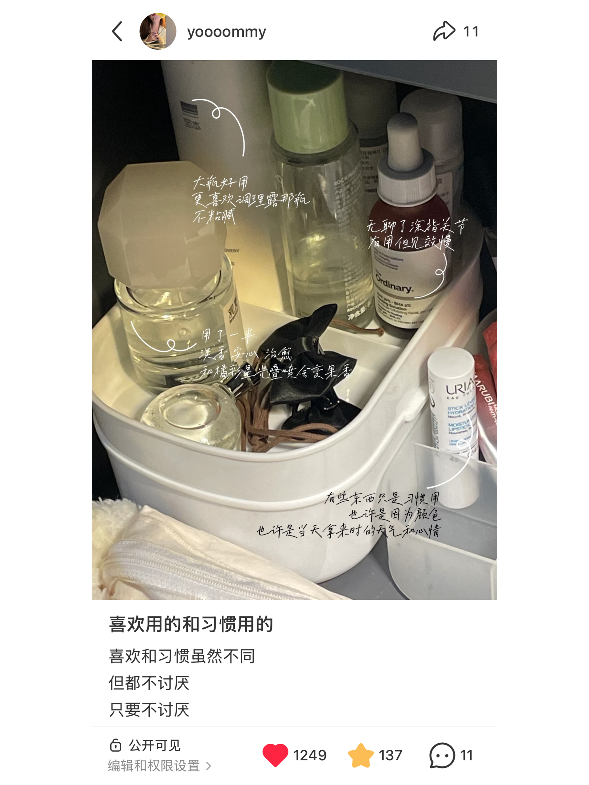
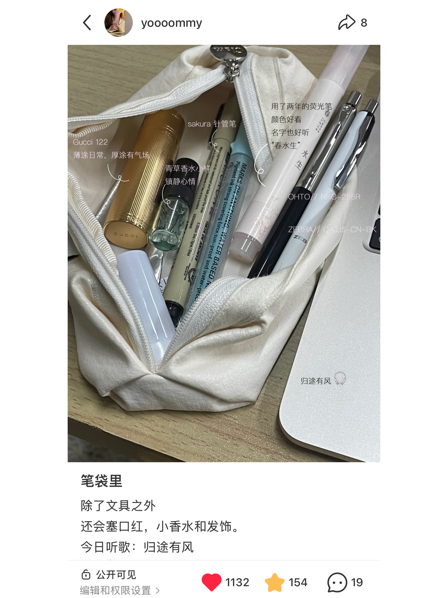
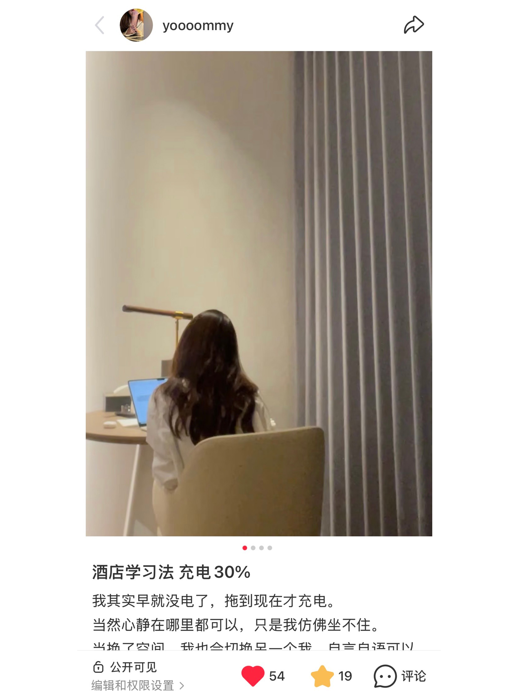
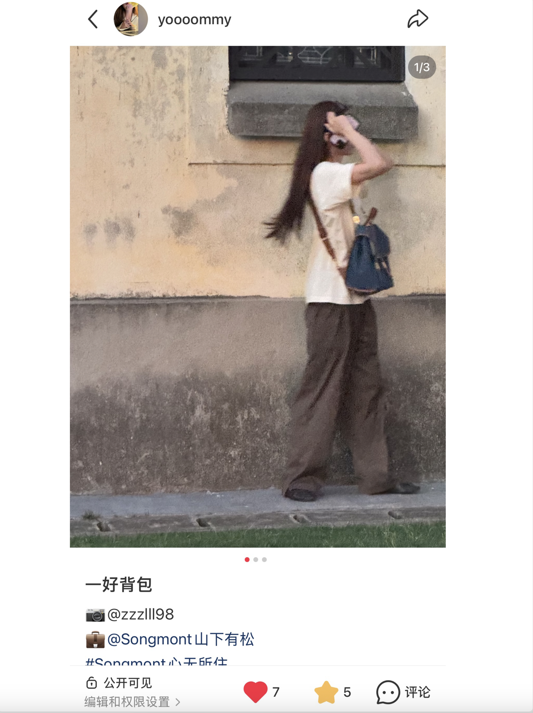
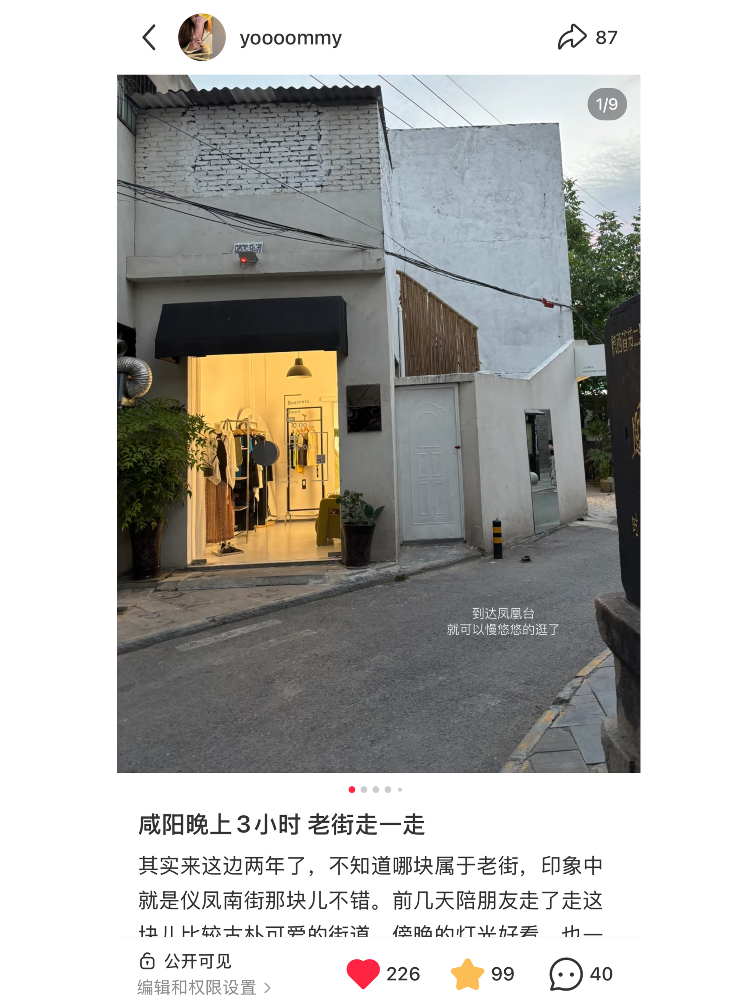
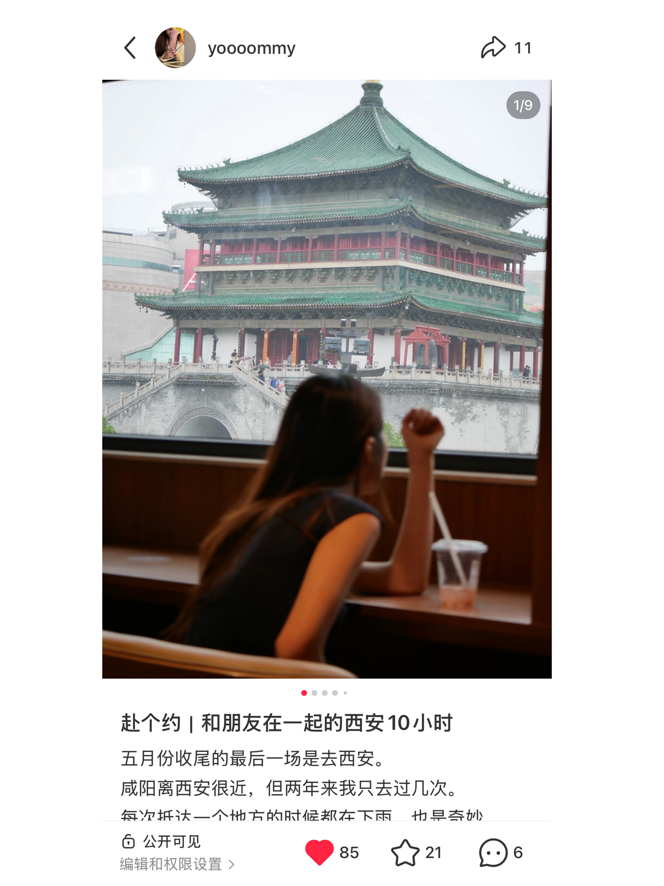

内容运营与数字传播
内容创作者 | AI 驱动工作流
内容创作者 | AI 驱动工作流
以生活方式内容为主，从日常分享出发，逐步形成稳定的图文表达方式。内容呈现以单图+场景化组合为主，通过弱商业化表达增强真实感，例如：
整体形成偏“低压力阅读”的内容风格。
在内容发布过程中逐步形成对用户偏好的基础观察：
使用 AI 工具进行内容复盘与优化，包括：
在持续发布过程中形成“观察—输出—复盘”的轻量迭代模式。

喜欢用的和习惯用的

笔袋里

酒店学习法

一好背包

咸阳3小时 老街走一走

赴个约｜和朋友在一起的西安10小时